Tremor-Script¶
The tremor-script scripting language is an interpreted expression-oriented language designed for the filtering, extraction, transformation and streaming of structured data in a stream or event-based processing system.
At its core, tremor-script supports a structured type system equivalent to JSON. It supports integer, floating point, boolean and UTF-8 encoded string literals, literal arrays and associative dictionaries or record types in addition to a null marker.
A well-formed JSON document is a legal tremor-script expression.
Principles¶
Safety¶
The language is explicitly not Turing-complete:
- there are no unstructured
gotogrammar forms - there are no unbounded
for,whileordo..whilelooping constructs - the language is built on top of rust, inheriting its robustness and safety features, without the development overheads
Developer friendly¶
The language adopts a Fortran-like syntax for key expression forms and has a path-like syntax for indexing into records and arrays
Stream-oriented / event-based¶
Tremor-script is designed to process unstructured ( but well-formed ) data events. Event data can be JSON, MsgPack or any other form supported by the tremor event processing system.
Self-documenting¶
The fortran-like syntax allows rich operations to be computed against arbitrary JSON-like data. For example JSON documents can be patched and mergeed with operation and document based templates. Records and Arrays can be iterated over to transform them, merge them with other documents or to extract subsets for further processing
Extensibility¶
The expression-based nature of tremor-script means that computational forms and any processing is transient. The language describes a set of rules ( expressions ) that process an inbound event document into an outbound documented emitted after evaluation of the script.
The core expression language is designed for reuse in other script-based DSLs and can currently be extended through its modular function subsystem.
The language also supports a pluggable data extraction model allowing base64 encoded, regular expressions and other micro-formats encoded within record fields to be referenced based on their internal structure and for subsets to be mapped accordingly.
In the future, tremor-script may be retargeted as a JIT-compiled language.
Performant¶
Data ingested into tremor-script is vectorized via SIMD-parallel instructions on x86-64 or other Intel processor architectures supporting ssev3/avx extensions. Processing streams of such event-data incurs some allocation overhead at this time, but these event-bound allocations are being written out of the interpreter.
The current meaning of performant as documented here means that tremor-script is more efficient at processing log-like data than the system it replaces ( logstash - which mixes extraction plugins such as grok and dissect with JRuby scripts and a terse configuration format )
Productive¶
The tremor-script parsing tool-chain has been designed with ease-of-debugging and ease-of-development in mind. It has buitin support for syntax-highlighting on the console with errors annotating highlighted sections of badly written
scripts to simplify fixing such scripts.
Language¶
This section details the major components of the tremor-script language
Comments¶
Comments in tremor-script are single-line comments that begin with a '#' symbol and continue until end of line.
# I am a comment
Literals¶
Literal in tremor-script are equivalent to their sibling types supported by the JSON format.
Null¶
The null literal which represents the absence of a defined value
null
Boolean¶
Boolean literal.
true
false
Integer Numerics¶
Integers in tremor-script are signed and are limited to 64-bit internal representation
404
The stdlib provides useful function for integers in std::integer.
use std::integer;
integer::parse("42") == 42
Floating-Point Numerics¶
Floating point numerics in tremor-script are signed and are limited to 64-bit IEEE representation
1.67-e10
The stdlib provides useful function for floats in std::float.
Character and Unicode Code-points¶
The language does not support literal character or Unicode code-points at this time.
UTF-8 encoded Strings¶
"I am a string"
The standard library provides useful function for string manipulation in std::string:
use std::string;
string::uppercase(string::substr("snotty", 0, 4)) == "SNOT"
String Interpolation¶
For strings tremor allows string interpolation, this means embedding code directly into strings to create strings out of them.
"I am a #{ "string with #{1} interpolation." }"
A hash sign followed by a curly bracket needs to be escaped \#{ hash signs themselves do not need to be escaped.
HereDocs¶
To deal with pre formatted strings in tremor script we allow for heredocs they are started by using triple quotes """ that terminate the line (aka """bla isn't legal). Heredocs do not truncate leading indentation, only the first leading linebreak after the leading triple-quote """ stripped.
"""
I am
a
long
multi-line
string with #{ "#{1} interpolation" }
"""
Since Tremor 0.9 Heredocs also support String Interpolation. A hash sign followed by a curly bracket needs to be escaped \#{ hash signs themselves do not need to be escaped.
Arrays¶
Array grammar:

Array literals in tremor-script are a comma-delimited set of expressions bracketed by the square brakcets '[' and ']'.
[ 1, 2, "foobar", 3.456e10, { "some": "json-like-document" }, null ]
The standard library provides several useful functions to work with arrays in std::array:
use std::array;
array::push(["snot"], "badger") == ["snot", "badger"]
Records¶
Record grammar:

Field grammar:

Record literals in tremor-script are syntactically equivalent to JSON document objects
{
"field1": "value1",
"field2": [ "value", "value", "value" ],
"field3": { "field4": "field5" }
}
Check out the stdlib std::record module for some helpful function for working with records.
Binary¶
Binaries are based on the Erlang bit syntax.
Binary grammar:
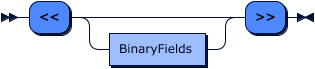
BinaryFields grammar:

BinaryField grammar:

Parts of each field are: <value>:<size>/<type> where both size and type are optional.
The binary types consists of up to three parts. That is 2 prefixes and 1 main type identifier. Examples: unsigned-big-integer, signed-integer, binary. The types currently supported are:
binary- this can handle both binaries and strings,sizehere refers to the number of bytesinteger- this can represent integers,sizehere means size in bits. In addition the type can be prefixed withbigandlittlefor indianness andsignedandunsignedfor signedness.
Some examples would be:
<<1:1, 42:7>><<(1 + 1)/unsigned-big-integer>><<1:4, "badger"/binary, -2:4/signed-little-integer>>
We could construct a TCP package this way:
# constructing a TCP package
# using made up, non-correct values
let event = {
"src": {"port": 1234},
"dst": {"port": 2345},
"seq": event,
"ack": 4567,
"offset": 1,
"res": 2,
"flags": 3,
"win": 4,
"checksum": 5,
"urgent": 6,
"data": "snot badger!"
};
<<
event.src.port:16, event.dst.port:16,
event.seq:32,
event.ack:32,
event.offset:4, event.res:4, event.flags:8, event.win:16,
event.checksum:16, event.urgent:16,
event.data/binary
>>
See also:
std::binaryfor useful function for working with binary data.std::string::into_binaryandstd::string::from_utf8_lossystd::base64for encoding and decoding binary data to string using base64.
Operators¶
List of binary and unary operators in tremor-script, ordered by precedence (from low to high):
| Symbol | Name | Example | Types |
|---|---|---|---|
| or | Logical OR | true or false |
bool |
| and | Logical AND | true and false |
bool |
| | | Bitwise OR | Bitwise OR has not been implemented yet | - |
| ^ | Bitwise XOR | 42 ^ 42, true ^ true |
integer, bool |
| & | Bitwise AND | 42 & 0, true & false |
integer, bool |
| ==, != | Equality, Inequality | "snot" != "badger" |
all |
| <, <=, >, >= | Comparison Operators | 42 > 0 |
integer, float, string, binary |
| <<, >>, >>> | Bitwise shift -- Left, Right(signed), Right(unsigned) | 42 >> 2 |
integer |
| +, - | Addition, Subtraction | 42 + 0 |
integer, float, string |
| *, /, % | Multiplication, Division, Modulus | 42 * 1 |
integer, float (no modulo) |
| +, - | Unary Plus, Unary Minus | +42 |
integer, float, string |
| not , ! | Unary Logical NOT, Unary Bitwise NOT | not false, Bitwise NOT has not been implemented yet |
bool |
Paths¶
Path grammar:

Qualified Segments grammar:

PathSegment grammar:
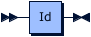
ArraySegment grammar:
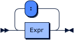
Path-like structures in tremor-script allow a subset of an ingested event, meta-data passed to the tremor-script function and script-local data to be indexed.
Example event for illustration purposes:
{
"store": {
"book": [
{
"category": "reference",
"author": "Nigel Rees",
"title": "Sayings of the Century",
"price": 8.95
},
{
"category": "fiction",
"author": "Herman Melville",
"title": "Moby Dick",
"isbn": "0-553-21311-3",
"price": 8.99
},
{
"category": "fiction",
"author": "J.R.R. Tolkien",
"title": "The Lord of the Rings",
"isbn": "0-395-19395-8",
"price": 22.99
}
],
"bicycle": {
"color": "red",
"price": 19.95
}
},
"expensive": 10
}
Grab the entire event document:
let capture = event;
Grab the books from the store (the same using key, index and escaped key notation for field lookup):
let capture = event.store.book;
# index and escaped notation can acomodate keys that include 'odd' characters such as whitespaces or dots.
let capture = event.store["book"];
let capture = event.store.`book`;
Grab the first book:
let capture = event.store.book[0];
Grab the title of the 3rd book:
let capture = event.store.book[2].title
Grab the range of books from 0 ( the first ) to 2 ( the last ), exclusive of the last book:
let capture = event.store.book[0:2];
The type of a path is equivalent to the type of the data returned by a path expression. So in the above examples, a reference to a book title would return the value at that path, which in the reference event document is a string.
Path's in tremor-script are themselves expressions in their own right.
Const¶
Const grammer:

Const can be used to define immutable, constant values that get evaluated at compile time. This is more performant then let as all logic can happen at compile time and is helpful for setting up lookup tables or other never changing data structures.
Let¶
Let grammar:

The let expression allows data pointed to by a path to be destructively mutated, and the pointed-to value reassigned. If the path does not yet exist, it will be created in-situ:
Set a local variable a to the literal integer value 10:
let a = 10;
Set a local variable a to be the ingested event record
let a = event;
Set the metadata variable a to be the value of the local variable a:
let $a = a;
Drop¶
Drop expressions enable short-circuiting the evaluation of a tremor-script when badly formed data is discovered. If no argument is supplied, drop will return the event record. If an argument is supplied, the result of evaluating the expression will be returned. Tremor or other processing tools can process dropped events or data using purpose-built error-handling.
As the content of the dropped event is user-defined, operators can standardise the format of the error emitted on drop from tremor-script
drop;
drop; # As the first drop always wins, this expression never runs
Emit¶
Emit grammar:

Emit expressions enable short-circuiting the evaluation of a tremor-script when processing is known to be complete and further processing can be avoided. If no argument is supplied, emit` will return the event record. If an argument is supplied, the result of evaluating the expression will be returned. Tremor or other processing tools can process emitted events or data using their default flow-based or stream-based data processing pipelines.
As the content of the emitted event is user-defined, oeprators can standardise the format of the event emitted on emit from tremor-script
Note
By default, if no emit or drop expressions are defined, all expressions in a correctly written tremor-script will be evaluated until completion and the value of the last expression evaluated will be returned as an emit message.
Implicit emission:
"badgers" # implicit emit
Explicit emission of "snot":
"badgers" # literals do not short-circuit processing, so we continue to the next expression in this case
emit "snot"
emit "oh noes!"
emit "never happens"; # As the first emit always wins, this expression never runs
There are times when it is necessary to emit synthetic events from tremor-script within a tremor pipeline to an alternate operator port than the default success route. For example, when data is well-formed but not valid and the data needs to be diverted into an alternate flow. The emit clause can be deployed for this purpose by specifying an optional named port.
emit {
"event": event,
"status": "malformed",
"description":
"required field `loglevel` is absent"
} => "invalid";
Match¶
Match grammar:

Match case grammar:

Match expressions enable data to be filtered or queried using case-based reasoning. Match expressions take the form:
match <target> of
case <case-expr> [ <guard> ] => <block>
...
default => <block>
end
Where:
- target: An expression that is the target of case-based queries
- case-expr: A predicate test, literal value or pattern to match against
- guard: An optional predicate expression to gate whether or not an otherwise matching case-clause will in fact match
- block: The expressions to be evaluated if the case matches, and any supplied guard evaluates to true
Examples:
Discover if the store.book path is an array, record or scalar structure:
match store.book of
case %[] =>
let msg = "store.book is an array-like data-structure",
msg
case %{} => "store.book is a record-like data-structure"
default => "store.book is a scalar data-type"
end
Find all fiction books in the store:
let found = match store.book of
case fiction = %[ %{ category ~= "fiction" } ] => fiction
default => []
end;
emit found;
Matching literal expressions¶
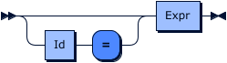
The simplest form of case expression in match expressions is matching a literal value. Values can be any legal tremor-script type and they can be provided as literals, computed values or path references to local variables, metadata or values arriving via events.
let example = match 12 of
case 12 => "matched"
default => drop "not possible"
end;
let a = "this is a";
let b = " string";
let example = match a + b of
case "this is a string" => "matched"
default => drop "not possible"
end;
let a = [ 1, "this is a string", { "record-field": "field-value" } ];
match a of
case a => a
default => drop "not possible"
end;
Matching on test predicate expressions¶
It is also possible to perform predicate based matching
match "this is not base64 encoded" of
case ~ base64|| => "surprisingly, this is legal base64 data"
default => drop "as suspected, this is not base64 encoded"
end;
These are often referred to informally as tilde expressions and tremor supports a variety of micro-formats that can be used for predicate or test-based matching such as logstash dissect, json, influx, perl-compatible regular expressions.
Tilde expressions can under certain conditions elementize ( extract ) micro-format data. The elementization or extraction is covered in the Extractors section of this document and in the Extractor reference.
Match and extract expressions¶
It is also possible to elementize or ingest supported micro-formats into tremor-script for further processing. For example, we can use the ~= and ~ operator to perform a predicate test, such as the base64 test in the previous example, which upon success, extracts ( in the base64 case, decoding ) a value for further processing.
For example if we had an embedded JSON document in a string, we could test for the value being well-formed json, and extract the contents to a local variable as follows:
let sneaky_json = "
{ \"snot\": \"badger\" }
";
match sneaky_json of
case json = ~ json|| => json
default => drop "this is not the json we were looking for"
end;
Matching tuple patterns¶
Tip
A tuple pattern matches a target value if the target is an array and each test matches the positionally correspondent value in the target. The target needs to be at least as long as the pattern but can be longer if the pattern ends with ....
If you are looking for a more set like operation look at the array pattern.

Tuple Pattern grammar:

Tuple Pattern filter grammar:
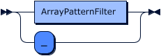
In addition to literal array matching, where the case expression tuple literal must exactly match the target of the match expression one for one, tuple patterns enable testing for matching elements within an array and filtering on the basis of matched elements.
let a = [0, 1, 2, 3, 4, 5, 6, 7, 8, 9, 0];
match a of
case %( 0 ) => "is a zero"
case %( 0, .. ) => "starts with a zero"
case %( _, 1, .. ) => "has 1 one at index 1"
default => "does not contain zero's"
end;
Matching array patterns¶
Tip
An array pattern matches a target value if the target is an array and each test in the pattern matches at least for one element in the target indiscriminate of their positions.
If you are looking for a more array like / positional operation look at the tuple pattern.

Array Pattern grammar:
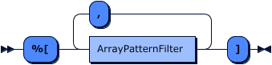
Array Pattern filter grammar:
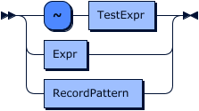
In addition to a subset match, where the elements of the pattern must be included in the target of the match expression, array patterns enable testing for matching elements within an array and filtering on the basis of matched elements.
let a = [0, 1, 2, 3, 4, 5, 6, 7, 8, 9, 0];
match a of
case %[ 0 ] => "contains zero's"
default => "does not contain zero's"
end;
Predicate matching against supported micro-formats is also supported in array pattern matching.
let a = [ "snot", "snot badger", "snot snot", "badger badger", "badger" ];
match a of
case got = %[ ~re|^(P<hit>snot.*)$| ] => got
default => "not snotty at all"
end;
Matching record patterns¶
Tip
A record pattern matches a target if the target is a record that contains at least all declared keys and the tests for each of the declared key match.
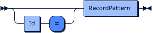
Record Pattern grammar

Record Pattern Fields grammar

Similarly to record literal matching where the case expression record must exactly match the target of the match expression, record patterns enable testing for matching fields or sub-structures within a record and extracting and elementizing data on the basis of matched predicate tests ( via ~= ).
We can check for the presence of fields:
match { "superhero": "superman", "human": "clark kent" } of
case %{ present superhero, present human } => "ok"
default => "not possible"
end
We can check for the absence of fields:
match { "superhero": "superman", "human": "clark kent" } of
case %{ absent superhero, absent human } => "not possible"
default => "ok"
end
We can test the values of fields that are present:
match { "superhero": "superman", "human": "clark kent" } of
case %{ superhero == "superman" } => "we are saved! \o/"
case %{ superhero != "superman" } => "we may be saved! \o/"
default => "call 911"
end;
We can test for records within records:
match { "superhero": { "name": "superman" } } of
case %{ superhero ~= %{ present name } } => "superman is super"
case %{ superhero ~= %{ absent name } } => "anonymous superhero is anonymous"
default => "something bad happened"
end;
We can also test for records within arrays within records tersely through nested pattern matching:
match { "superhero": [ { "name": "batman" }, { "name": "robin" } ] } of
case id = %{ superhero ~= %[ %{ name ~= re|^(?P<kind>bat.*)$|} ] } => id
default => "something bad happened"
end;
Guard clauses¶
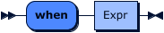
Guard expressions in Match case clauses enable matching data structures to be further filtered based on predicate expressions. For example they can be used to restrict the match to a subset of matching cases where appropriate.
match event of
case record = %{} when record.log_level == "ERROR" => "error"
default => "non-error"
end
Effectors¶
Effectors grammar:
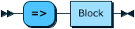
Block:
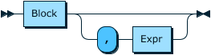
Effectors are the expressions evaluated when a case pattern and guard succeeded.
Things are simple when using only a single expression as the match case effector. When we have to use multiple expressions to do some more complex processing, we need to separate those expressions with commas ,:
use std::string;
match event of
case record = %{ present foo } =>
let foo_content = record["foo"],
let replaced = string::replace(foo_content, "foo", "bar"),
let record["foo"] = replaced
default => null
end
Merge¶

Merge expressions defines a difference against a targetted record and applies that difference to produce a result record. Merge operations in tremor-script follow merge-semantics defined in RFC 7386.
let event = merge event of {"some": "record"} end
| Given | Merge | Result | Explanation |
|---|---|---|---|
{"a":"b"} |
{"a":"c"} |
{"a":"c"} |
Insert/Update field 'a' |
{"a":"b"} |
{"b":"c"} |
{"a":"b", "b":"c"} |
Insert field 'b' |
{"a":"b"} |
{"a":null} |
{} |
Erase field 'a' |
{"a":"b","b":"c"} |
{"a":null} |
{"b":"c"} |
Erase field 'a' |
{"a": [{"b":"c"}]} |
{"a": [1]} |
{"a": [1]} |
Replace field 'a' with literal array |
Patch¶

Patch operation grammar

Patch expressions define a set of record level field operations to be applied to a target record in order to transform a targetted record. Patch allows fields to be: inserted where there was no field before; removed where there was a field before; updated where there was a field before; or inserted or updated regardless of whether or not there was a field before. Patch also allows field level merge operations on records or for the targetted document itself to be merged. Merge operations in patch are syntax sugar in that they are both based on the merge operation.
Patch follows the semantics of RFC 6902 with the explicit exclusion of the copy and move operations and with the addition of an upsert operation the variant supported by tremor-script
| Example | Expression | Result | Explanation |
|---|---|---|---|
let foo = {"foo":"bar"} |
patch foo of insert "baz" => "qux" end |
{"foo":"bar","baz":"qux"} |
Add baz field |
let foo = {"foo":"bar","baz":"qux"} |
patch foo of erase "foo" end |
{"baz":"qux"} |
Erase foo and add baz field |
let foo = {"foo":"bar"} |
patch foo of upsert "foo" => null end |
{"foo":null} |
Set foo to null, or reset to null if field already exists |
For comprehensions¶

For Case Clause grammar

For expressions are case-based record or array comprehensions that can iterate over index/element or key/value pairs in record or array literals respectively.
Given our book store example from above:
let wishlist = for store.book of
case (i,e) =>
for e of of
case (k,v) when k == "price" and v > 20.00 => { "title": e.title, "isbn": e.isbn }
default => {}
end
end
State¶
As part of the tremor pipeline processing, there are times when it's necessary to track state across events over time (eg: in order to exploit stateful algorithms for session tracking, or building and maintaining application state). For this purpose, a tremor pipeline is equipped with operator node-level state management and storage capabilities that persists for the running lifetime of a pipeline deployed into the tremor runtime.
From tremor-script, this shared storage is accessbile via the state keyword, which allows for accessing the storage contents via path expressions, akin to how the event keyword works (with the key difference being that the state storage is shared across events). On pipeline initialization, the state is initialized as null and users are free to set it to arbitrary value over the course of processing.
Here's a tremor-script example demonstrating the usage of the state keyword -- it maintains a counter for the events coming in and emits the count alongside the event:
match type::is_null(state) of
case true =>
let state = {"count": 1}
default =>
let state.count = state.count + 1
end;
{
"count": state.count,
"event": event
}
This will work as part of the runtime::tremor operator confguration in the legacy pipeline yaml setup, and also as an embedded script in the trickle definition of the pipeline.
A key thing to note is that by design, state is not shared across operator nodes in the pipeline. Therefore, if we have scripts across multiple nodes in the pipeline, the state keyword in each script allows access only to the local node-specific state storage, and not the state from any other operator nodes or something global to all the nodes.
Since the state storage lives for the lifetime of a pipeline, state will not be persisted when the pipeline is undeployed or the host process is shut down.
Extractors¶
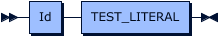
TEST_LITERAL Grammar:

TEST_ESCAPE Grammar:

The language has pluggable support for a number of microformats with two basic modes of operation that enable predicate tests ( does a particular value match the expected micro-format ) and elementization ( if a value does match a specific micro-format, then extract and elementize accordingly ).
The general form of a supported micro-format is as follows:
<name>|<format>|
Where:
- name - The key for the micro-format being used for testing or extraction
- format - An optional multi-line micro-format specific format encoding used for testing and extraction
Formats can be spread out over multiple lines by adding a \ as a last character of the line. Spaces at the start of the line will be truncated by the lowest number of leading spaces. So if 3 lines respectively have 2, 4, and 7 spaces then 2 spaces are going to be removed from each line leaving 0, 2, and 5 spaces at the start.
The set of supported micro-formats at the time of writing are as follows:
| Name | Format | Test mode | Return type | Extraction mode |
|---|---|---|---|---|
| base64 | Not required | Tests if underlying value is a base64 encoded string | string | Performs a base64 decode, returning a UTF-8 encoded string |
| glob | Glob expression | Tests if underlying value conforms to the supplied glob pattern | string | Returns the value that matches the glob ( identity extraction ) |
| re | PCRE regular expression with match groups | Tests if underlying value conforms to supplied PCRE format | record | Extracts matched named values into a record |
| cidr | Plain IP or netmask | Tests if underlying value conforms to cidr specification | record | Extracted numeric ip range, netmask and relevant information as a record |
| kv | Logstash KV specification | Tests if the underlying value conforms to Logstash KV specification | record | Returns a key/value record |
| dissect | Logstash Dissect specification | Tests if the underlying value conforms to Logstash Dissect specification | record | Returns a record of matching extractions based on supplied specification |
| grok | Logstash Grok specification | Tests if the underlying value conforms to Logstash Grok specification | record | Returns a record of matching extractions based on supplied specification |
| influx | Not required | Tests if the underlying value conforms to Influx line protocol specification | record | Returns an influx line protocol record matching extractions based on supplied specification |
| json | Not required | Tests if the underlying value is json encoded | depends on value | Returns a hydrated tremor-script value upon extraction |
There is no concept of injector in the tremor-script language that is analogous to extractors. Where relevant the language supports functions that support the underlying operation ( such as base64 encoding ) and let expressions can be used for assignments.
Additional Grammar Rules¶
These rules are referenced in the main tremor-query grammar rules above and are listed here as extended reference.
DocComment Grammar:
DocCommentLine Grammar: